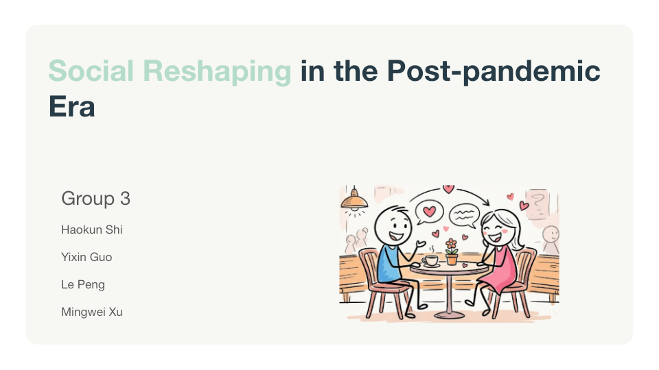
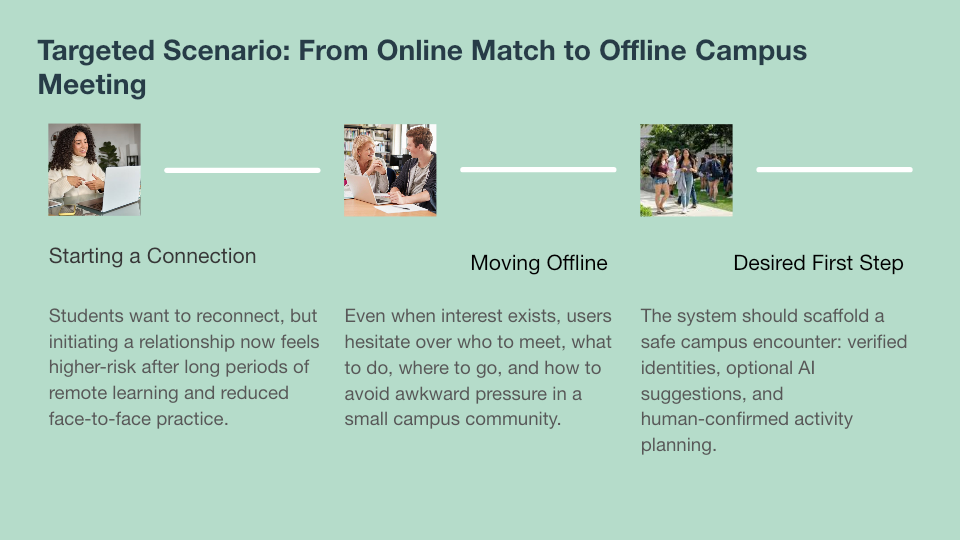
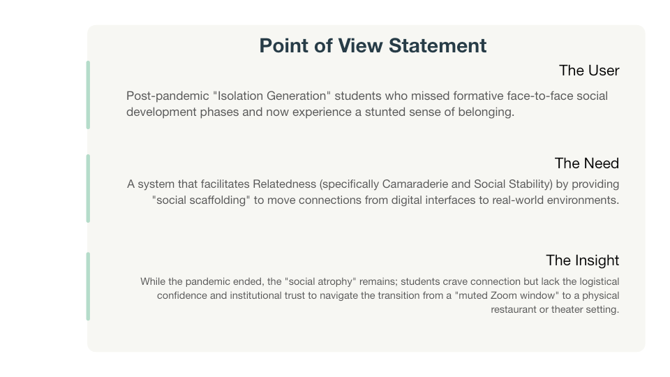
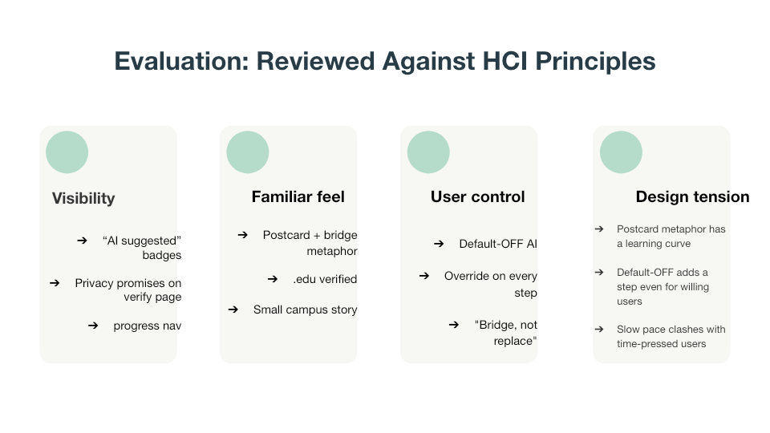
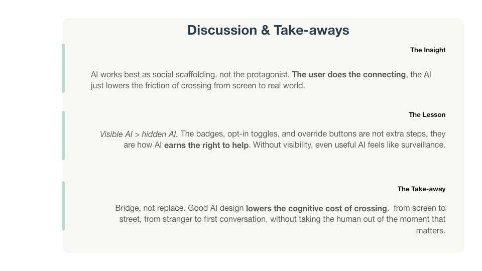
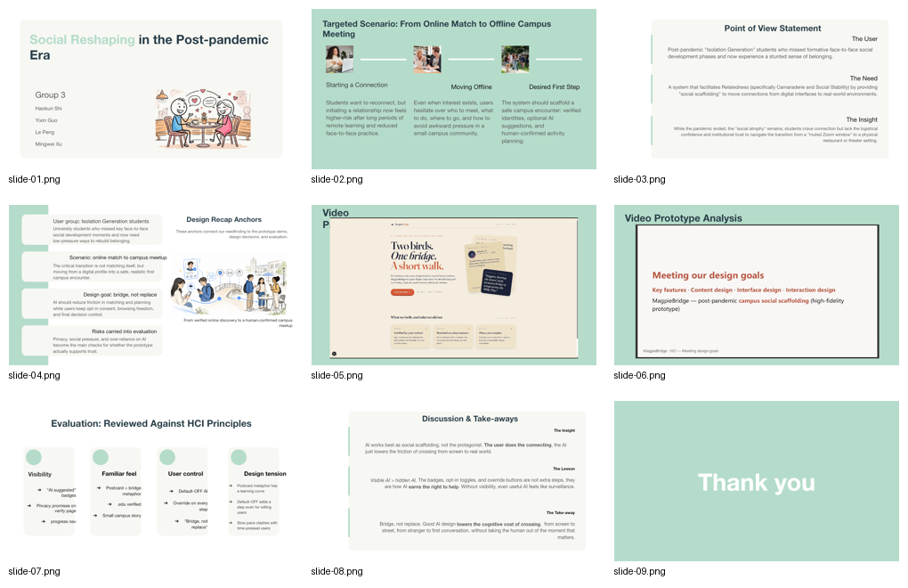

Video prototype: the user journey from discovering MagpieBridge to preparing for a campus meetup.
Individual Project Page
MagpieBridge
An AI-supported campus social platform for post-pandemic university students who need low-pressure support to rebuild belonging and move from digital connection to real-world interaction.

Project description and goal
Meeting a real post-pandemic social need
Our project responds to a specific human need in the post-pandemic era: many students want connection, but face-to-face social development was disrupted by remote learning, reduced campus activities, and a loss of everyday encounters. The resulting problem is not simply a lack of matches. It is a lack of confidence, trust, and practical support when moving from an online profile to an offline campus meeting.
The goal of MagpieBridge is to provide social scaffolding. The system helps users discover compatible peers, understand why a suggestion is relevant, plan a low-pressure campus activity, and keep final control over whether and how the meeting happens.
Point of view
Post-pandemic "Isolation Generation" students need a system that facilitates relatedness, camaraderie, and social stability by helping them move from digital interaction to real-world environments with greater trust and lower pressure.
Prototype evidence
Video demo and prototype analysis
Prototype analysis video: how the design goals are reflected in content, interface, and intelligent interaction design.
Learning and execution process
From needfinding to final design
Needfinding
Identifying social atrophy and belonging loss
The early research framed the problem as a long-term disruption to young adults' social development. Students missed casual campus encounters, subtle social cues, and opportunities to practice relationship-building.
POV
Defining the user, need, and insight
The POV statement clarified that users need relatedness and social stability, not just a matching algorithm. This shifted the design from "more recommendations" to "safer transition from screen to real-world meeting."
Ideation
Exploring matching, safety, and offline meetups
Storyboards explored safer first contact, better matching, and the transition from online interaction to offline activity. Speed dating feedback highlighted privacy, social pressure, and over-reliance on AI as design risks.
Prototype
Making AI visible and controllable
The final prototype uses school verification, AI suggestion badges, opt-in controls, activity planning, and override options. These choices make AI supportive without making it the protagonist of the social relationship.
Evidence gallery
Presentation snapshots






My responsibility and milestone achievements
My role in the group
Scenario and user recap
I was responsible for the opening recap of the final presentation: target scenario, target user group, and how the needfinding results connect to the rest of the design.
Design rationale synthesis
I translated the Phase 1 evidence into the concise logic of "online match to campus meetup" and "bridge, not replace," so the audience could understand why the prototype was designed this way.
Presentation preparation
I prepared my individual recap slides and opening narration script, making sure the project's user problem, HCI framing, and transition into the video prototype were clear.
Personal reflection
Knowledge gained, lessons learned, and use of AI
HCI knowledge gained
The most important HCI lesson for me was that design starts from a precise user need, not from a technology feature. Needfinding and POV statements helped us move from the broad topic of "student loneliness" to the specific transition problem of online-to-offline social interaction.
Lessons learned
I learned that trust is not created by one privacy statement. It has to be distributed across the interface: verification, visible AI labels, opt-in controls, and override actions all work together to reduce pressure and uncertainty.
Use of AI
AI was both part of the design concept and part of my working process. In the prototype, AI acts as a recommendation and planning support. In my own workflow, I used AI assistance to organize presentation wording, refine the project narrative, and produce clearer supporting materials.
Video-paper reflection
The idea came from observing a post-pandemic contradiction: students still want real connection, but the path from screen to face-to-face interaction feels harder than before. We linked this to HCI knowledge through needfinding, POV framing, user control, visibility of system status, and evaluation of design trade-offs. Making the video helped us test whether the concept could be communicated as an actual user journey rather than only as a feature list.
Generated artifacts
Project files and supporting evidence
Requirement checklist
Brief self-introduction and navigation.
Project description and project goal.
Learning and execution process with evidence.
Personal responsibilities and milestone achievements.
Reflection on knowledge gained and lessons learned.
Artifacts, video demo, presentation, AI use, and contribution.